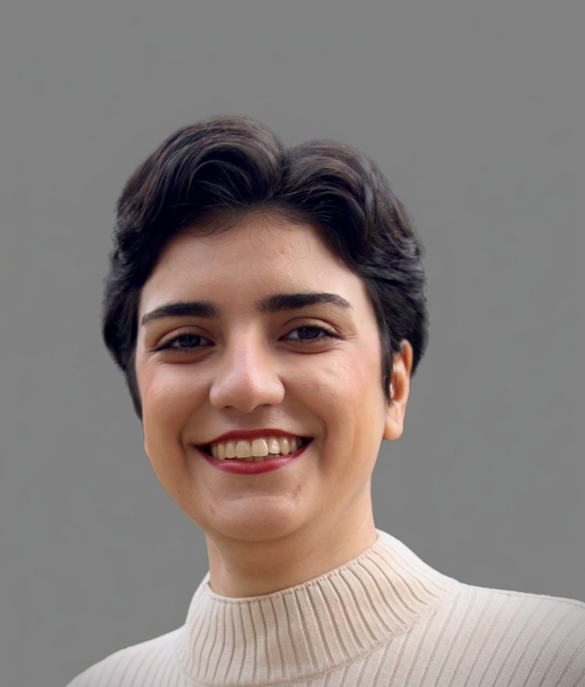

05.2024 — PRESENT
Research Assistant · GIS Institute
University of Stuttgart
Processing and analysis of leveling and GNSS data, including time-series, trend and uncertainty analyses.
HELLO, I'M
I work with geospatial and geodetic data to understand our changing world — from satellite imagery and GIS to GNSS, InSAR and data-driven environmental analysis.

ABOUT ME
I am a Master's student in Geomatics Engineering at the University of Stuttgart, currently completing my thesis.
My focus is on GIS, remote sensing and geodetic data analysis. I have experience processing spatial and geodetic datasets, including GNSS time series, leveling data, trend and uncertainty analysis, and the comparison of geodetic measurement techniques. I also work with InSAR data and deep-learning methods for remote sensing.
I am particularly interested in applied projects in geospatial analysis, environmental monitoring and urban development.
EXPERIENCE
University of Stuttgart
Processing and analysis of leveling and GNSS data, including time-series, trend and uncertainty analyses.
University of Stuttgart
Contributed to a remote-sensing project using JavaScript and supported teaching and student exercises.
Arfak NGO · Iran
Volunteer mathematics teaching and academic support for socially disadvantaged children.
SELECTED PROJECTS
Selected academic projects across geomatics, photogrammetry, remote sensing, computer vision and GIS.
Registered terrestrial photogrammetry and airborne laser scanning point clouds using ground control points, then evaluated alignment and geometric quality and visualized the result in 3D.
View on GitHub ↗Segmented and classified high-resolution ISPRS Potsdam aerial imagery using RGB, infrared and DSM information with K-Means, SLIC superpixels and Random Forest.
View on GitHub ↗Implemented core photogrammetric and computer-vision methods including forward intersection, spatial resection, DLT, fundamental-matrix estimation and epipolar geometry.
View on GitHub ↗Explored multispectral remote-sensing imagery in MATLAB through spectral-band visualization, false-color composites and histogram-based image enhancement.
View on GitHub ↗Applied ArcGIS Pro workflows to Stuttgart spatial data, including address geocoding, geospatial data management, thematic population mapping and cartographic visualization.
View on GitHub ↗EDUCATION
University of Stuttgart · Germany
Shahid Beheshti University · Iran
TOOLKIT
QGIS · ArcGIS Pro · ENVI · AutoCAD · Sentinel Data
Python · MATLAB · JavaScript
PyTorch · Semantic Segmentation · Image Processing
GNSS · InSAR · PPP · Deformation Analysis
English C1 · German B2 · Persian Native
Analytical Thinking · Independent Work · Teamwork · Continuous Learning
GET IN TOUCH
I'm interested in opportunities and collaborations in geospatial data analysis, GIS, remote sensing and environmental monitoring.
maedeh.jebelli@gmail.com ↗